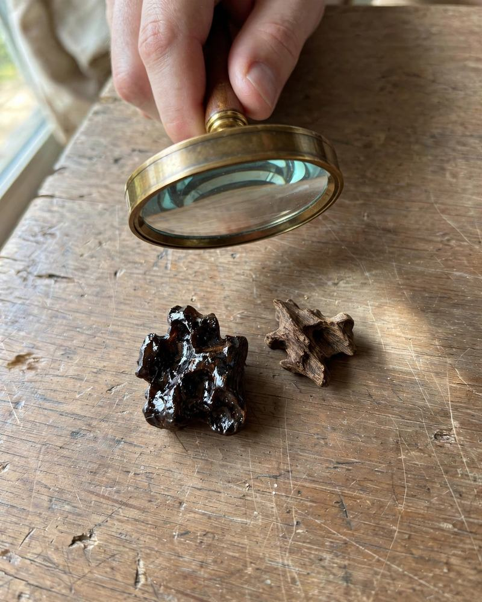

奇楠和普通沉香是同一类植物（瑞香科沉香属）的产物，区别在结香方式和成分：奇楠的油脂含量更高，质地柔软，2-(2-苯乙基）色酮类成分突出，香韵凉意明显，入口有生津感。
T/DBCX 010-2025《奇楠沉香鉴定及质量分级》对奇楠的鉴定和分级有明确指标。买奇楠之前，先确认报告是不是按这个标准出的。
一是价差大：真奇楠按克卖，价格是普通沉香的数倍甚至数十倍，造假利润高。二是消费者了解少：很多人只听过“奇楠凉、软、香”，不知道具体标准，给了冒充可乘之机。
三是产量确实少：真奇楠可遇不可求，市场上流通的“奇楠”数量远超实际产量，多出来的那些，来源自己想。
普通沉香冒充：把油脂丰富的普通沉香直接叫奇楠卖，价格翻几倍。泡油软化：把普通沉香泡油泡软，冒充奇楠的柔软质地。
香精做凉意：加薄荷脑、冰片之类的物质做凉意，闻起来凉，但凉得发冲、不自然，和奇楠的沉稳凉意完全不同。注胶增重：往料里注胶，增重冒充高油奇楠。
质地：真奇楠质地柔软，指甲能掐出印子，切面油润。但泡油的普通沉香也能变软，软不是唯一标准。
香韵：真奇楠室温下就有明显凉意，凉得沉稳、持久，上炉后层次丰富。薄荷脑做的凉意冲、薄、短，闻久了发腻。
油线：真奇楠油线密集，油脂和木质交错，颜色深浅有过渡。油线太整齐、太黑、像画上去的，要警惕。
最终还是要靠检测：按 T/DBCX 010-2025 出具的报告，看特征成分数据。没有报告的“奇楠”，不要按奇楠的价格买。
报告是不是按 T/DBCX 010-2025 出的？机构有没有 CMA 资质？报告上的样品信息和实物能不能对上？
价格明显低于行情的“奇楠”，基本不是奇楠。不要轻信“野生”“老料”这类说法，野生奇楠受 CITES 附录 II 管制，买卖需要合法手续，没有手续的所谓野生奇楠，本身就是问题。
市面上大部分“奇楠”都不是奇楠。买之前先看报告，没有报告就不要按奇楠的价格付钱。真奇楠不怕检测，怕检测的都不是真奇楠。
| 看什么 | 真奇楠常见表现 | 冒充品常见表现 |
|---|---|---|
| 质地 | 柔软，指甲能掐印，切面油润 | 泡油变软，但油浮在表面 |
| 凉意 | 室温凉意沉稳持久 | 薄荷脑的凉，冲、薄、短 |
| 油线 | 密集自然，深浅有过渡 | 太整齐太黑，像画上去的 |
| 价格 | 按克计价，明显高于普通沉香 | 低价“捡漏”，远低于行情 |
| 证书 | 按 T/DBCX 010-2025，机构有 CMA | 无报告，或报告不对版 |